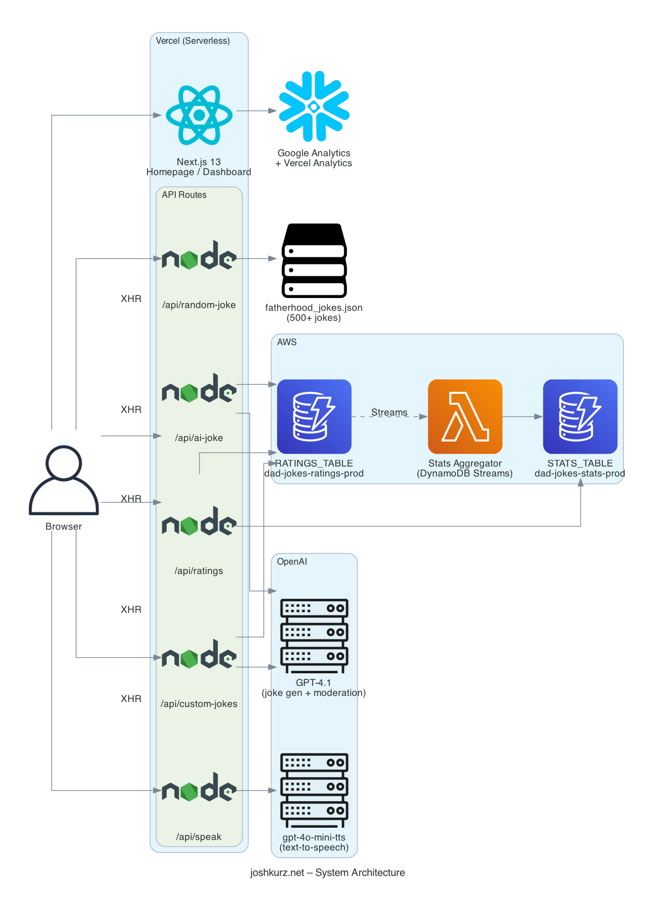
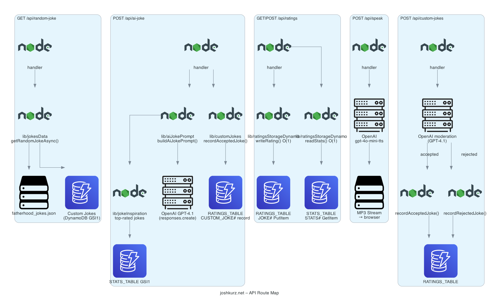
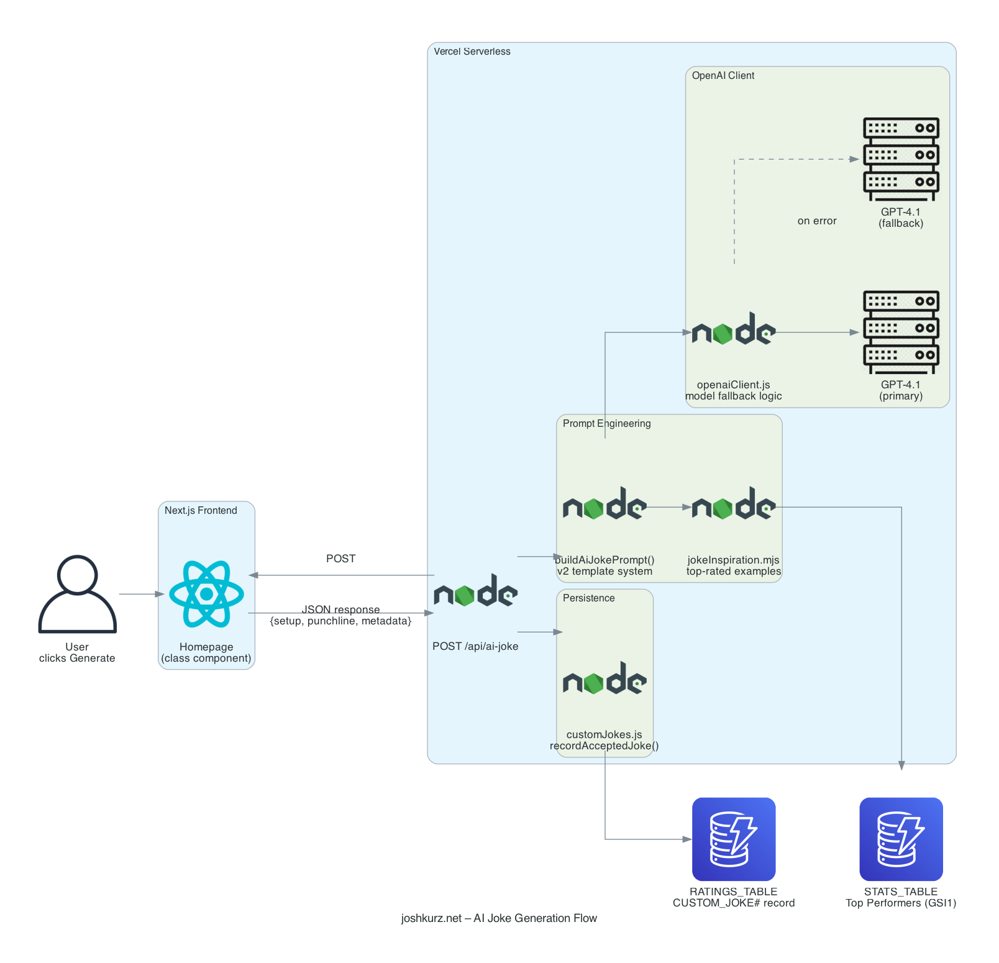

IDE-Based Coding Agents · 2026
Unlocking Engineering
Productivity with
Coding Agents
A live demo of the full agentic workflow lifecycle — from understanding a codebase to shipping features and gating commits — running in Claude Code, a new-generation terminal-native IDE. Split-screen: Claude on the left, browser on the right.
Claude Code
Next.js
DynamoDB
OpenAI
Vercel
joshkurz.net
The Project
joshkurz.net
A full-stack web app for sharing, rating, and AI-generating dad jokes. Built with real tools, real storage, real AI — deployed to production on Vercel.
Frontend
Next.js 15 · React 18 · CSS Modules
API
Next.js serverless functions
AI
OpenAI GPT-4.1 + TTS (streaming)
Storage
AWS DynamoDB · fatherhood.gov dataset
Deploy
Vercel · GitHub Actions
Today's Talk
What We'll Demo
01
Generate architecture diagrams with Python
/architecture-diagram
02
Well-Architected review: Performance
/well-architected-performance
03
Well-Architected review: Security
/well-architected-security
04
Live QA flow across the entire site
/smoke-test
05
Scan changes for vulnerabilities
/pre-commit-scan
06
Run real tests before committing
/pre-commit-tests
07
Browse the web from Claude Code — live in cmux
/cmux-browser
→
The Method
Building Reusable Skills
Start by solving the problem with the agent. Once it's working, tell Claude you want a reusable skill — it auto-fetches the skill-docs spec. Spec it out, iterate. The goal: an intelligent interface on top of deterministic scripts.
> let's turn this into a reusable skill
-
🐍
Why scripts?Code, PNGs, reports — deterministic output is richer and more consistent than LLM generation alone.
-
🧠
Why the intelligent layer?SKILL.md knows the scripts, their params, their deps — and can update them when requirements change. The interface stays stable, the scripts stay sharp.
Intelligent Interface
SKILL.md
Context-aware · knows scripts,
params, deps · updates as needed
↕
instructs & updates
Deterministic Layer
Scripts & Commands
Python · Shell · npm
same input → same output
↓
produces
Output
Reproducible Artifacts
PNGs · Reports · Results
Consistent every run
We don't read architecture docs — we generate diagrams from the actual code. Claude reads every file and writes a Python script that produces real PNG diagrams, committed to the repo and regenerated on every build.
> /architecture-diagram
-
🔍
Reads all API routes, lib modules, dependencies
No manual mapping – Claude traces the actual code paths
-
🐍
Generates Python using the diagrams library
Script lives in .claude/skills/architecture-diagram/scripts/
-
🖼️
Commits PNGs to diagrams/ on every build
Always in sync with real code · referenced in README + docs

System Architecture

API Route Map

AI Joke Flow
Claude reads the hot paths — caching logic, API latency, bundle size, streaming — and finds real issues with file and line references.
> /well-architected-performance
What Gets Reviewed
API latency · Cache TTLs · Bundle size · Streaming implementation · N+1 queries · Cold start impact
Output Format
Critical issues with file:line refs · Code snippets for fixes · Specific metrics to track · Quick wins you can ship today
Not a generic OWASP checklist. Claude reads your actual code, finds real vulnerabilities, and shows you the exploit scenario plus the fix.
> /well-architected-security
- 🔑
Secrets scan – hardcoded credentials, exposed env varsChecks every API handler and lib module
- 💉
Injection vectors – path traversal, XSS, unsafe evalTraces user input through to storage
- 🚫
Missing controls – no rate limiting, no auth, open endpointsFlags public endpoints that should be protected
- 📦
CVE audit – npm audit for known vulnerabilitiesHighlights HIGH and CRITICAL with CVE IDs
After shipping a fix, we verify the whole site still works — in the terminal, without touching a mouse. Claude walks through 12 checks across every page and feature, then delivers a pass/fail report.
> /smoke-test https://joshkurz.net
12 checks, every run
- 🏠
Homepage loads · joke visible · nav present
- 🃏
Next joke · AI joke generation (streaming)
- 🔊
Speak button · audio player renders · no error
- 📋
Custom joke form visible
- 🎙️
Speak page · load random joke · voice dropdown · play
- 📊
Dashboard · nav links · console clean
The output
✅ Homepage loads
✅ Next joke navigation
✅ AI joke generation
✅ Speak button (homepage)
✅ Play audio (speak page)
✅ Dashboard loads
✅ Console errors
⏭ ratings submit — skipped
Two skills that run before every commit. One checks security, one checks test quality. Both block commits that shouldn't ship.
Security Scan
> /pre-commit-scan
- 🔍 Scans the staged diff for secrets, injection, unsafe patterns
- 📦 Runs npm audit on dependencies
- 🚫 Blocks commit with clear PASS/FAIL verdict
Test Runner
> /pre-commit-tests
- ✅ Runs the full Jest suite
- 🧐 Audits test quality — catches fluff tests
- 🚩 Flags changed files with no test coverage
cmux ships a scriptable in-app browser. We wrote a skill that lets Claude snapshot the accessibility tree, click, fill, scroll, and aggregate content — directly from the terminal, no switching apps.
> cmux identify --json
> cmux browser surface:13 snapshot --interactive
> cmux browser surface:13 click e2
> cmux browser surface:13 fill e5 "hello"
What We demoed live
-
🃏
joshkurz.net
Navigated jokes, clicked rating buttons, triggered AI generation, explored the dashboard
-
🗞️
Hacker News
Read the front page, opened story #18, got a full breakdown of an MCP context-saving tool
-
🔍
Google Search
Searched "cmux navigating websites with Claude Code" — confirmed this is a novel workflow
The Takeaway
The AI Dev Workflow
1
Understand – generate diagrams from code
2
Review – performance and security with file:line refs
3
Verify – run a full QA pass across every page before shipping
4
Gate – scan and test before every commit
5
Browse – navigate, click, and aggregate the web from the terminal
These aren't one-off prompts — they're repeatable skills that run on any project.
✓
Thanks for coming
Questions?
All skills are in ~/.claude/skills/
joshkurz.net
/architecture-diagram
/well-architected-performance
/well-architected-security
/smoke-test
/pre-commit-scan
/pre-commit-tests
/cmux-browser